介绍
定义
- 一种开发模式，Hybrid APP
- 混合使用Native和web技术开发
优缺点
- 优点：开发快、易更新、开发周期短
- 缺点：性能问题、兼容性问题
- Android5.0+、iOS9.0+上缺点不再明显
应用场景
- 微信公众号，通过JSSDK连接Native端和Web端
- 微信小程序，通过内置框架连接Native和Web端
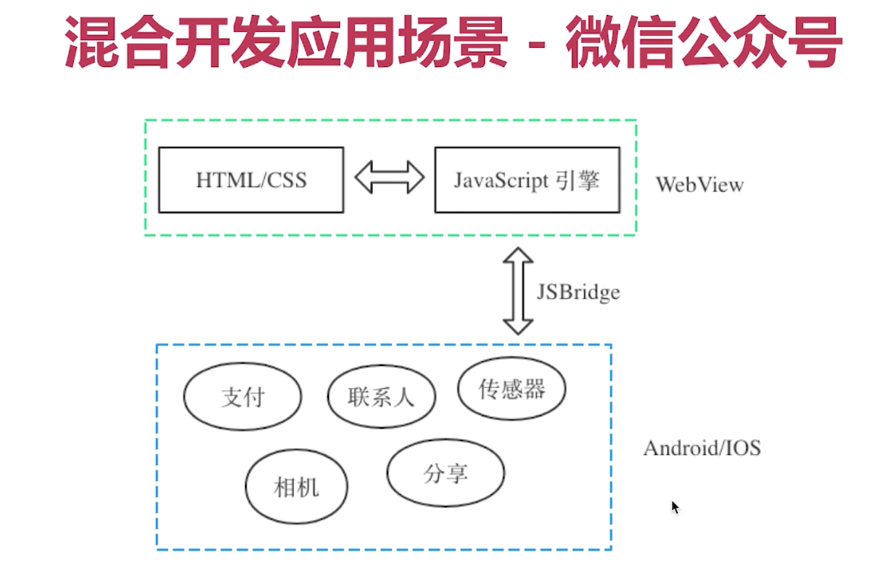
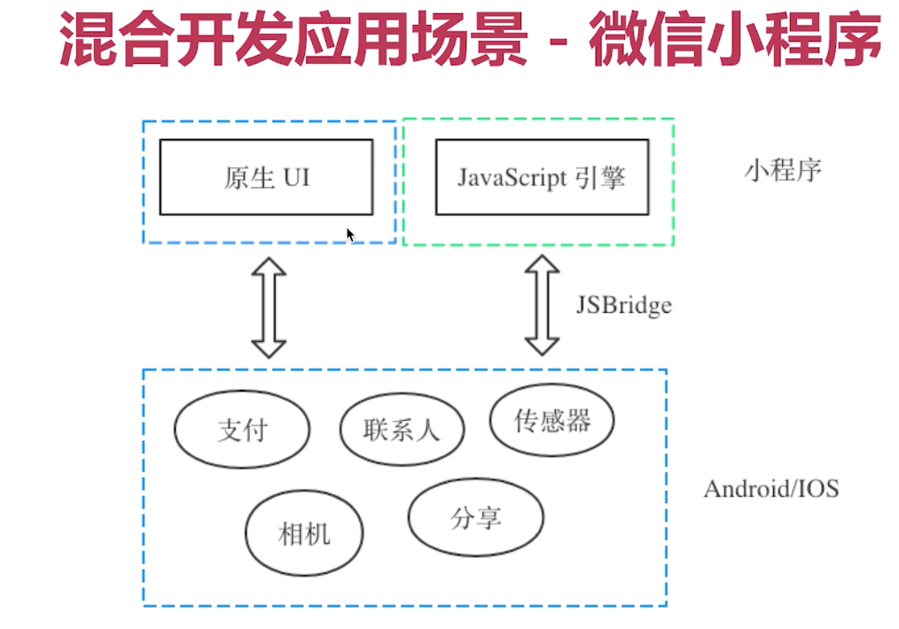
学习意义
- 更好的使用第三方平台
- 更灵活的技术方案选型
- 具备搭建平台和输出服务的能力
核心技术
JSBridge
- 实现Native端和Web端双向通信的一种机制
- 以JavaScript引擎或webview容器为媒介
- 通过约定协议进行通信
主流框架
- Web渲染：Cordova（前身是PhoneGap）
- 原生渲染：React Native、Weex
- 混合渲染：微信小程序
JSBridge
实现原理
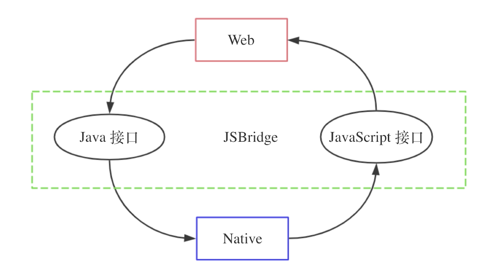
- 类比Client/Server模式
- 将Native端原生接口封装成JavaScript接口
- 将Web端JavaScript接口封装成原生接口
- Web端和Native端之间双向通信
JSBridge两种实现方式
- 一：拦截WebView请求的URL Schema
- 二：向WebView注入JS API
拦截URL Schema方式
- URL Schema是类URL的一种请求格式
:// / ? - 示例：http://www.google.com/serach?keyword=jsbridge
- 自定义JSBridge通信的URL Schema
- jsbridge://
? - 示例：jsbridge://showToast?text=hello&a=b
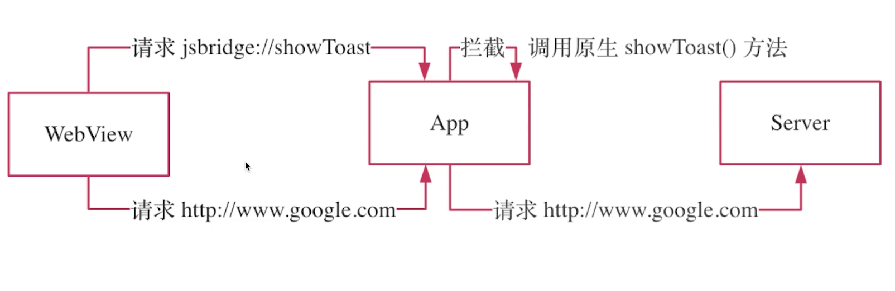
优缺点
- 优点：兼容性好
- 缺点：不直观、URL长度有限制
原生调用web方法
private void showWebDialog (String text) {
String jsCode = String.format("window.showWebDialog('%s')", text);
webView.evaluateJavascript(jsCode, null);
}
//web端
window.showWebDialog = text => window.alert(text);
Web调用原生方法
document.addEventListener('DOMContentLoaded', e => {
const editText = document.querySelector('#editText');
const showBtn = document.querySelector('#showBtn');
showBtn.addEventListener('click', e => {
const inputValue = editText.value;
showNativeDialog(inputValue)
})
})
function showNativeDialog (text) {
window.alert('jsbridge://showNativeDialog?text=' + text);
}
原生添加alter监听
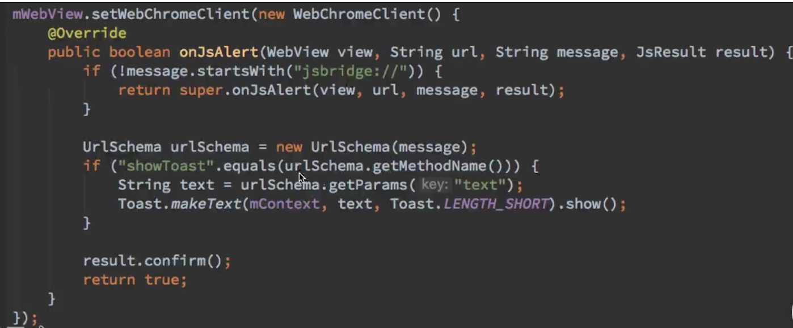
注入API方式
优缺点
- 优点：简单直观
- 缺点：有兼容性问题（Android4.2+）
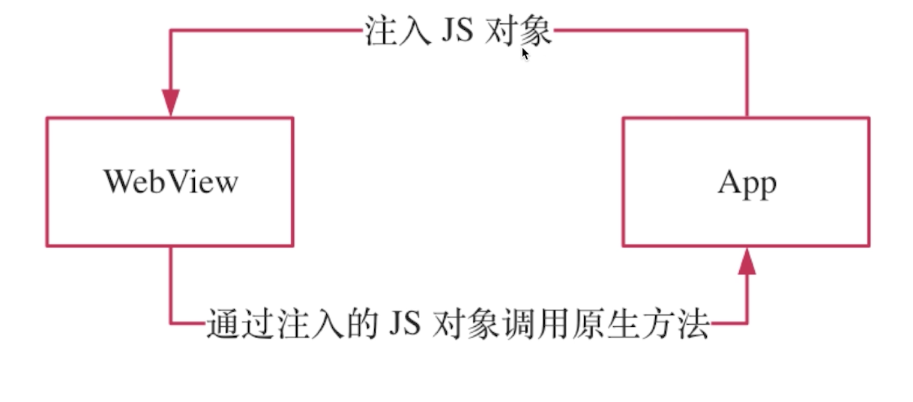
Web调用原生方法需要改变
function showNativeDialog (text) {
window.NativeBridge.showNativeDialog(text);
}
//原生
webView.setWebChromeClient(new WebChromeClient());
webView.addJavascriptInterface(new NativeBridge(this), "NativeBridge");
class NativeBridge {
private Context ctx;
NativeBridge(Context ctx) {
this.ctx = ctx;
}
@JavascriptInterface
public void showNativeDialog(String text) {
new AlertDialog.Builder(ctx).setMessage(text).create().show();
}
}
支持回调的JSBridge
场景：Web端获取Native端输入框的值
- 在对端执行操作并返回结果
- 有输入有输出才是完整的调用
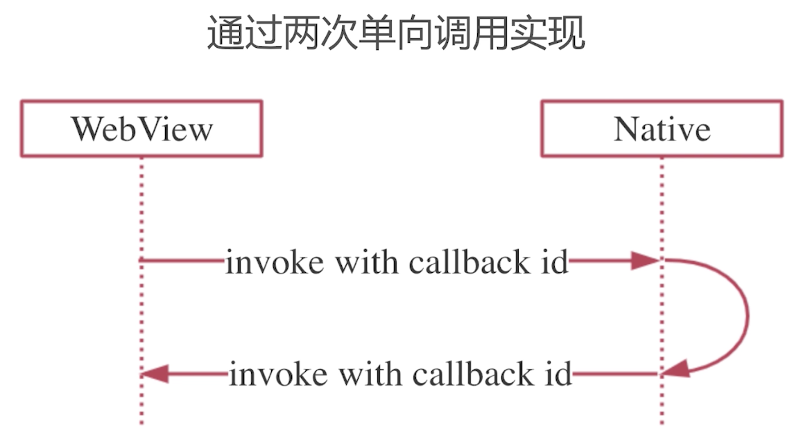
Web代码
let id = 1
const callbackMap = {}
window.JSSDK = {
getWebEditTextValue(callbackId){
const editText = document.querySelector('#editText');
const inputValue = editText.value;
NativeBridge.receiveMessage(callbackId,value)
},
getNativeEditTextValue(callback){
const callbackId = id++
callbackMap[callbackId] = callback
NativeBridge.getNativeEditTextValue(callbackId)
},
receiveMessage(callbackId,value){
if(callbackMap[callbackId]){
callbackMap[callbackId](value)
}
}
}
////
showBtn2.addEventListener('click', e => {
window.JSSDK.getNativeEditTextValue(value => window.alert('Native输入值:'+value))
})
Native代码
showBtn2.setOnClickListener(new View.OnClickListener() {
@Override
public void onClick(View view) {
mNativeSDK.getWebEditTextValue(new Callback() {
@Override
public void invoke(String value) {
Log.e("11","web输入值："+value);
}
});
}
});
////
interface Callback {
void invoke(String value);
}
class NativeSDK{
private Context mContext;
private int id = 1;
private Map<Integer,Callback> callbackMap = new HashMap<>();
NativeSDK(Context context){
mContext = context;
}
void getWebEditTextValue(Callback callback){
int callbackId = id++;
callbackMap.put(callbackId,callback);
final String jsCode = String.format("window.JSSDK.getWebEditTextValue(%s)",callbackId);
((MainActivity)mContext).runOnUiThread(new Runnable() {
@Override
public void run() {
((MainActivity)mContext).webView.evaluateJavascript(jsCode, null);
}
});
}
void receiveMessage(int callbackId,String value){
if(callbackMap.containsKey(callbackId)){
callbackMap.get(callbackId).invoke(value);
}
}
}
///
@JavascriptInterface
public void getNativeEditTextValue(int callbackId) {
String vale = editText.getText().toString();
final String jsCode = String.format("window.JSSDK.receiveMessage(%s,'%s')", callbackId,vale);
runOnUiThread(new Runnable() {
@Override
public void run() {
webView.evaluateJavascript(jsCode, null);
}
});
}
@JavascriptInterface
public void receiveMessage(int callbackId,String value){
((MainActivity)ctx).mNativeSDK.receiveMessage(callbackId,value);
}
流程讲解：Native获取Web输入框的值，先调用NativeSDK里的getWebEditTextValue方法，跳转到Web端JSSDK里的getWebEditTextValue方法，跳转到Native端的receiveMessage方法，跳转到NativeSDK的receiveMessage方法，Map获取接口对象执行接口方法
JSBridge的开源实现
- JsBridge：拦截URL Schema
- DSBridge：注入JS API
Native代码：
public class Main2Activity extends AppCompatActivity {
private DWebView webView;
private EditText editText;
private Button showBtn;
private Button refreshBtn;
@Override
protected void onCreate(Bundle savedInstanceState) {
super.onCreate(savedInstanceState);
setContentView(R.layout.activity_main2);
editText = findViewById(R.id.editText);
showBtn = findViewById(R.id.showBtn);
refreshBtn = findViewById(R.id.refreshBtn);
webView = findViewById(R.id.webview);
webView.loadUrl("http://192.168.0.121:8080");
webView.getSettings().setJavaScriptEnabled(true);
webView.setWebChromeClient(new WebChromeClient());
webView.addJavascriptObject(new JsApi(this),null);
showBtn.setOnClickListener(new View.OnClickListener() {
@Override
public void onClick(View view) {
webView.callHandler("getWebEditTextValue", null, new OnReturnValue<String>() {
@Override
public void onValue(String retValue) {
Log.e("11","web输入值："+retValue);
}
});
}
});
}
class JsApi{
private Context mContext;
JsApi(Context context){
mContext = context;
}
//for asynchronous invocation
@JavascriptInterface
public void getNativeEditTextValue(Object msg, CompletionHandler<String> handler) {
String value = ((Main2Activity)mContext).editText.getText().toString();
handler.complete(value);
}
}
}
Web端代码：
<script src="https://unpkg.com/dsbridge@3.1.3/dist/dsbridge.js"> </script>
<script>
dsBridge.register('getWebEditTextValue',() => {
const editText = document.querySelector('#editText');
return editText.value
} )
document.addEventListener('DOMContentLoaded', e => {
const showBtn = document.querySelector('#showBtn');
showBtn.addEventListener('click', e => {
dsBridge.call('getNativeEditTextValue','',value => {
window.alert('Native输入值：'+value)
})
})
})
</script>
混合APP实战
Web端HTTP请求存在的问题
- Web发送请求接口XMLHttpRequest和fetch
- 浏览器同源政策CORS安全限制
- 不够安全、无法优化网络
Web端跨域请求
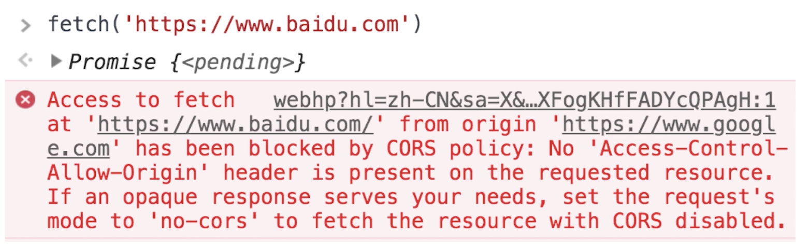
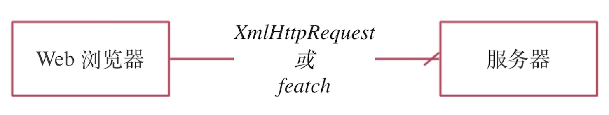
原生HTTP请求优点
- 没有浏览器跨域限制
- 安全加密、签名校验
- 弱网优化、流量优化
Web端跨域请求
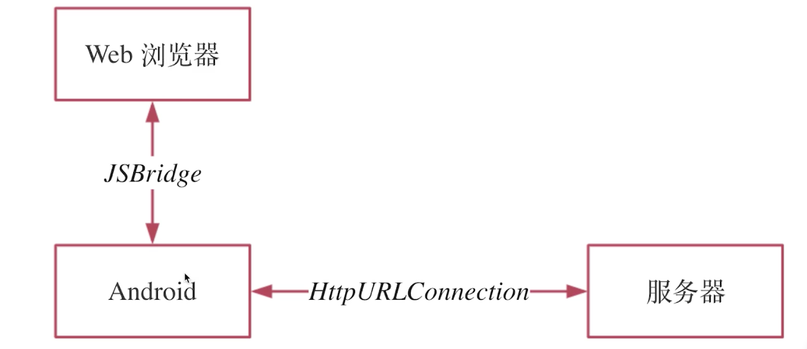
Native端沉浸式换肤
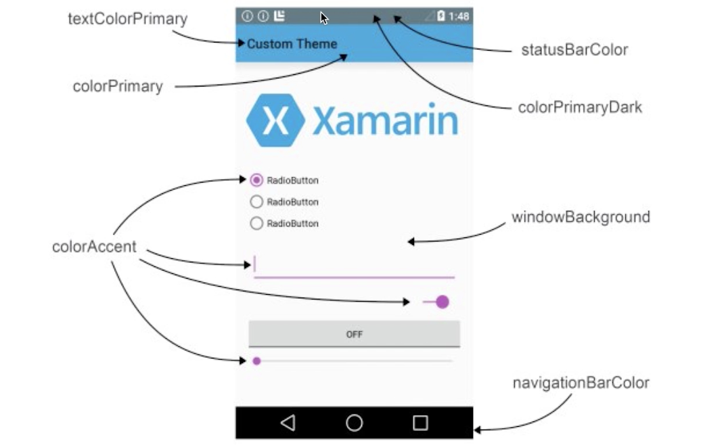
代码
Native：
public class MainActivity extends AppCompatActivity {
private DWebView webView;
@Override
protected void onCreate(Bundle savedInstanceState) {
super.onCreate(savedInstanceState);
setContentView(R.layout.activity_main);
webView = findViewById(R.id.webView);
webView.addJavascriptObject(new JsApi(), null);
webView.loadUrl("http://10.43.101.59:8080");
}
@Override
public boolean onCreateOptionsMenu(Menu menu) {
getMenuInflater().inflate(R.menu.menu, menu);
return true;
}
@Override
public boolean onOptionsItemSelected(@NonNull MenuItem item) {
changeTheme(0xFFFF0000);
return true;
}
// 换肤
private void changeTheme (int color) {
// 状态栏
getWindow().addFlags(WindowManager.LayoutParams.FLAG_DRAWS_SYSTEM_BAR_BACKGROUNDS);
getWindow().setStatusBarColor(color);
// 标题栏
getSupportActionBar().setBackgroundDrawable(new ColorDrawable(color));
// 导航栏
getWindow().setNavigationBarColor(color);
// Web 网页的背景
webView.callHandler("changeTheme", new Object[]{color});
}
public class JsApi {
@JavascriptInterface
public void nativeRequest(Object params, CompletionHandler handler) {
try {
String url = ((JSONObject)params).getString("url");
String data = request(url);
handler.complete(data);
} catch (Exception e) {
handler.complete(e.getMessage());
e.printStackTrace();
}
}
private String request(String urlSpec) throws Exception {
HttpURLConnection connection = (HttpURLConnection) new URL(urlSpec).openConnection();
connection.setRequestMethod("GET");
InputStream inputStream = connection.getInputStream();
BufferedReader reader = new BufferedReader(new InputStreamReader(inputStream));
StringBuffer result = new StringBuffer();
String line;
while((line = reader.readLine()) != null) {
result.append(line);
}
reader.close();
connection.disconnect();
return result.toString();
}
}
}
Web端：
<script>
document.addEventListener('DOMContentLoaded', e => {
const urlTextEl = document.querySelector('#urlText')
const sendBtn = document.querySelector('#sendBtn')
const responseEl = document.querySelector('#response')
sendBtn.addEventListener('click', e => {
const url = urlTextEl.value
if (url) {
// 清除旧数据
responseEl.textContent = ''
// 发送原生请求
dsBridge.call("nativeRequest", {url: url}, data => {
responseEl.textContent = data
})
}
})
})
dsBridge.register("changeTheme", color => {
// android 0xFFFF0000 ARGB
// web 0xFF0000FF RGBA
document.body.style.backgroundColor = '#' + (color & 0x00FFFFFF).toString(16)
})
</script>